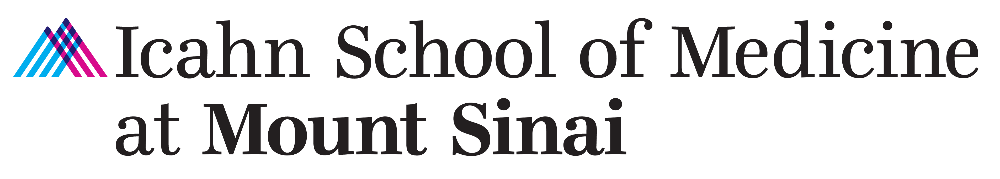

Bioinformatician II, Bunyavanich Lab
Jul 2023 – Oct 2023
- Modeled the association between gene methylation patterns of ~450K CpGs and allergic reaction severity to peanut using advanced statistical techniques.
- Finalizing a review on the epigenomics of food allergy to be
published on Pediatric Allergy and Immunology.
RA, Maniker Lab
Nov 2022 – May 2023
- Analyzed and visualized EPA
rating trends of ~500 anesthesiology residents at the university
hospital.

RA, Wang Lab
May 2022 – May 2023
- Compiled feature interaction networks from databases and programmed a published graph-based tool for multi-ome signal prioritization.
- Led expanded model validation across lab projects by leveraging the
newly available All of Us platform.

Lab Assistant, Protein Biochemistry Group
Mar 2021 – Jun 2021
- Piloted a new sample request and delivery workflow; imported 30,000+ protein tubes into the BioBank to support company-wide studies.
- Used ELNs, LIMS, BioRegistry, and more to perform sample management in a timely and responsible manner.
- Appointed as an immediate respondent for Protein Biochemistry for
urgent needs during pandemic protocols.


TA, Computer Science III - Software Design & Implementation
Sep 2020 – Dec 2020
- Designed and graded student assignments and lab work.